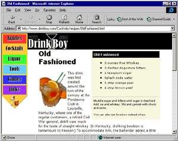
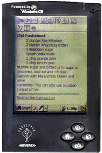

|
| ||
|
| ||
Robert Hess
Developer Relations Group
Microsoft Corporation
June 17, 1998
The following article was originally published in the Site Builder Network Magazine "More or Hess" column.
When Internet Explorer 4.0 came out, one new feature that got a lot of press was its use of "channels," how they would affect the way sites presented information, and how users would access this information.
Dog years have passed since channels first made their appearance. Have they changed the way anybody uses the Web? Well, not exactly.
Channels were supposedly designed to accomplish a lot of things That term "server push" was never too far from people's lips, although Microsoft's Internet Explorer 4.0 evangelists were careful to correctly position this feature as "intelligent pull." It is, in fact, the client that remains in full control of synchronizing the content.
The channel feature that sounded best to me was the concept of pre-loading information so that you could view it while disconnected from the network. A scenario often given was that of a worker whose commute to work included a 90-minute ferry ride. With channels, the worker could subscribe to multiple news and information sites, and, while sleeping, have them automatically updated during the night. In the morning, on the ferry ride to work, the worker could peruse the information pages at his leisure.
This sounded so cool that, while my wife was in Paris, I tried subscribing her to channels offered by some of the popular news sites. I thought this would be a great way for her to get a snapshot of the news at home, and be able to read it offline (in France, you are charged by the minute for every telephone call, even local ones). The problem, however, was that in most cases the pages preloaded onto the system were only home pages that brief headlines. While each headline linked to a full article, it was a full Internet link, and so couldn't be accessed by a machine in an offline state.
Channels supposedly were a way for the Web-site developer to help identify which pages on a site worked together to provide a good offline view of the information. Unfortunately, few developers took the time to do this correctly, or most didn't really understand the scenario in the first place.
Another problem with channels is that most Web sites simply used them as yet another view into their content. Too few site builders really thought through why they were doing this, or the experiences and expectations of their users.
In short, channels have proven less compelling then what was originally intended.
But don't count channels out yet. Perhaps, just perhaps, they will yet prove a useful tool for Internet and intranet sites.
I've been hearing from the Microsoft Windows CE folks about this new thing called Mobile Channels  , which target synchronization with the new "Palm-size PCs" (PPC) based on the Windows CE technology. At first, I just rolled my eyes, and thought, "Here we go again." But as I thought about it more, I realized that mobile channels actually make sense, and, more importantly, that they force folks designing channels to actually do them right.
, which target synchronization with the new "Palm-size PCs" (PPC) based on the Windows CE technology. At first, I just rolled my eyes, and thought, "Here we go again." But as I thought about it more, I realized that mobile channels actually make sense, and, more importantly, that they force folks designing channels to actually do them right.
Since a PPC is normally used in a disconnected state, the people developing the site will most likely use it in a disconnected state as well. So if they leave something on the Internet, they'll realize this rather quickly and get it fixed. The only sites that won't work well in a disconnected state will be those whose authors don't' themselves find useful enough to use on a PPC device, in which case I would question their reasons for spending the time to develop it.
Another problem that mobile channels will solve is that Web developers will need to carefully rethink their content for the PPC. The screens are for now black and white, screen size is smaller, and storage space is limited. All of these factors will necessitate some level of redesign to make the content appropriate to such limitations of form. Flashy graphics, spinning animation, wads of useless verbiage -- all will be quickly tossed aside in favor of crisp, clean messages. It will also be important to distill the information down to what is truly useful on a shirt-pocket device.
To understand if your Web site might benefit from having an associated mobile channel, consider the information on your site. Is there anything that you would find extremely useful to have with you at all times? For example, let's assume your site deals with cocktails. You provide articles, recipes, message threads, links to other sites, reviews of books, a glossary of terms, and descriptions of different spirits and liquors. What parts of this site would you expose as a mobile channel?
The cocktail recipes, of course. And its home page would simply be a list of all the cocktail names. A couple small graphics just to help it look attractive, perhaps some well thought-out use of font styles and sizes to make it easier to read. At the very most, you might feature a "Cocktail of the Week," and provide a small write-up on that one cocktail.
Over time, based on feedback from users, you might discover other information that is really handy to have in a "pocket" version of your site, but the rule of thumb here is to keep it small, and keep it simple.
I happen to have a couple of modest examples of my own: Drink Boy.com  , and a companion mobile channel
, and a companion mobile channel  .
.
Here's a screen shot -- from the regular site -- of a page devoted to the history and making of the cocktail known as an Old Fashioned:

And here, from the mobile channel, is an image of the comparable page as it displays on my PPC:

While PPC devices are only just entering the market, I highly recommend that you think seriously about what it might mean to have your site available on a PPC. Take the time to identify which parts of your site would truly be useful, and how to redesign them to take up the minimum amount of real estate on the screen.
You might just be surprised, and learn that such an exercise actually results in some positive design features on your full Web site. It's always useful to look at something in a slightly different way, and this is exactly what designing a mobile channel can do for your site.
Robert Hess is an evangelist in Microsoft's Developer Relations Group. Fortunately for all of us, his opinions are his own and do not necessarily reflect the positions of Microsoft.
Microsoft's Windows CE site If you have a Palm-size PC running Windows CE, you can check out the MSNBC Quick News For technical how-to questions, check in with the Web Men Talking, MSDN Online's answer pair. Mobile Channels
 has more on Mobile Channels.
has more on Mobile Channels.
 Mobile Channel.
Mobile Channel.
Did you find this material useful? Gripes? Compliments? Suggestions for other articles? Write us!
© 1999 Microsoft Corporation. All rights reserved. Terms of use.